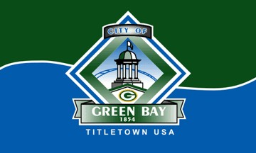

Green Bay, Wisconsin, is a city in Brown County, Wisconsin, United States. It is the largest city in the county and the 11th-largest city in Wisconsin. The city was incorporated in 1890.
Green Bay is known for its rich history, particularly in the fur trade and as a hub for transportation and commerce. The city has a strong connection to the Green Bay Packers, a professional football team that has won multiple championships and has a dedicated fan base
Lumber, paper, cheese, and meat are some of the industries that have contributed to Green Bay's economy.
Green Bay was settled by French explorers in the 17th century and was done so in a peaceful alliance with the Native American tribe the Ho-Chuck that were in the area at that time in 1634.
Green Bay was gradually taken over by the British after the French and Indian War with control of Green Bay coming in 1761 and all of Wisconsin in 1763.
Green Bay was then taken over by the United States in 1783 after the American Revolution. Wisconsin officially became a state in 1848.
Green Bay is also home to several cultural attractions, including the Neville Public Museum, the National Railroad Museum, and the Green Bay Botanical Garden. The city hosts various events and festivals throughout the year, celebrating its heritage and community spirit.
Overall, Green Bay is a city with a rich history, a strong sense of community, and a vibrant culture. It offers residents and visitors alike a unique blend of historical significance, recreational opportunities, and cultural experiences.
Green Bay is also known for its beautiful natural surroundings, including the Fox River, which runs through the city, and the nearby Bay Beach Wildlife Sanctuary. The city offers numerous parks, trails, and outdoor recreational activities for residents and visitors to enjoy.
In addition to its historical and cultural attractions, Green Bay has a thriving arts scene, with local theaters, galleries, and music venues showcasing the talents of the community. The city also has a strong commitment to education, with several schools and institutions of higher learning serving the area.